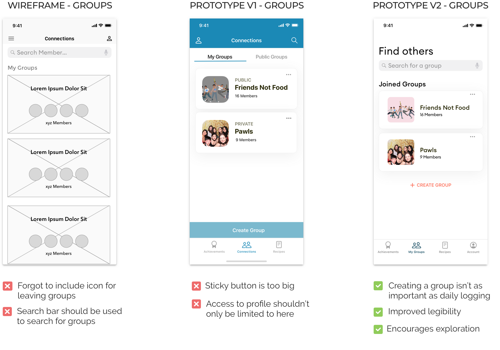

Product Designer
Hardware Engineer
Illustrator
Front End Developer
As the sole product designer, I was responsible for designing the iOS app. All members conducted research and drove content strategy.
Figma
Fall 2019 Course Project
One commonality amongst our team was the love we had for animals. We were all concerned with the issue of pet homelessness. To address this issue, we decided to explore how we can reduce risk of failed dog adoptions by assisting current dog owners to not give up their pets.
Survey(466) results showed that a dogs's behavioral issue is the number one reason why dogs are given up to shelters. The most frequently reported issues included barking, whining, and other maladaptive noise-related behavior. During interviews(6), we learned that dog owners felt current solutions could be augmented further and they were willing to invest in effective solutions. We decided to explore how we might decrease barking in dogs and help the dogs continue to stay with their families.
Using Arduino technology, code, and Figma, our team created a smart crate system that can be controlled with a mobile app.

We recruited four participants to keep a behavioral log of every instance when their dog experienced any distress, when and where it occurred, what triggered the dog’s response, how serious the dog’s response was, and what the owner’s did about the dog’s distress.
Auditory & visual stimuli
Unintentionally positively reinforces the behavior or removes dog from environment
Either go to their safe place or eat treats
My goal was to discover if there was a solution that addressed all four interview insights. Examining the pro-veganism apps in the market showed me that the problem space didn't have an all-in-one solution yet.

1. The Proactive Mother
Julianne is a mom to two young boys with asthma. She no longer wants to support the industry responsible for 18% of all harmful gases.
2. The Young Animal Activist
Beth, an activist for PETA, has been vegan since she was 15. The number of animals she has saved thus far motivates her.
3. The Health Conscious Athlete
Mark is a boxer who is weary of heart disease and has to eat less beef. He would love to connect with others on a similar journey.
The journey map for my persona Julianne (The Proactive Mother), further supported the existence of two main problems discovered in the interviews and helped me identify design opportunities-
1. Target group's lack of experience with vegan recipes
2. Inability to connect with others who are also trying to eat less meat
"Rewarding, enticing, and resourceful" were themes I considered while ideating. Above all else, my app needed to be convenient- users should not experience a waiting time when inputting or expecting data.
Every persona was a busy person on-the-move. The solution needed to be readily accessible.
People want to know when they're making progress. Use gamification to incorporate weekly "meat-free" goals for quick feedback.
Provide vegan recipes! People want to eat vegan meals besides PB & J.
Interviewees stated it is hard to see the fruit of their labor after having gone meat-free, so include metrics about users' positive impact.
The road to veganism was lonely. Help connect people and have them engage in friendly competition with their number of meat-free days.
After determining the final features, I iterated on a flow that required the least amount of user input. I chose to use a bottom nav over a hamburger menu to help users move quickly.

I created wireframes of the "Achievements" feature and ran A/B tests. The A/B tests helped me figure out what users preferred in terms of the ease of digesting the content, entering data, and visual appeal.
Scrolling
Scrolling allowed for better information visibility and content digestion.
Smaller FAB
The FAB was familiar to users and it took up less screen space.
There were many other iterations not shown here. From wireframes to v1, I made design decisions that can account for uncommon use cases such as adding or deleting a group. From v1 to v2, I decided to improve the IA and increase the prominence of the search bar to promote exploratory behavior. Lastly, following existing design systems and designing on an 8pt grid tremendously helped the interface design.


1. Typography
The typeface needed to be clear, have a modern feel, legibile but still distinguishable. I settled on a less widely used geometric typeface.

2. UI Buttons
I learned that users weren't comfortable with my newly created patterns. I ultimately turned to Google's Material Design.
3. Color
I wanted a white background to make sure the content is easy to read. For the UI, I opted for a bright orange and a complementary teal.

Users can daily log their meat-free days throughout the week and be encouraged by the visual representation of the improving environment.

Users can track their progress and see the positive impact of their accumulated meat-free days.

Users can form groups with people who have similar goals and compare how they rank to their peers in the number of meat-free days.

Users can look up recipes or learn about vegan diets to equip themselves on this journey.

DESIGN SYSTEMS. DESIGN SYSTEMS. DESIGN SYSTEMS.
I fell in love with the IOS human interface & Google's material design guidelines. Existing systems allow me to use my brainpower on other more complex design decisions.
Think in product & not features
Originally, I had about six features I wanted to include. But feedback showed that having all six features was extremely overwhelming. I learned to ground myself in users' problems and the product's goals.
Even as a product designer, visual design skills are important
With great visual design, users are willing to take the time to learn even the most unfamiliar products. Great visual design is undeniably a part of a great user experience. Every design decision needs to be intentional.
¬© 2020 Designed & Coded by üôãü誂Äç‚ôÄÔ∏è